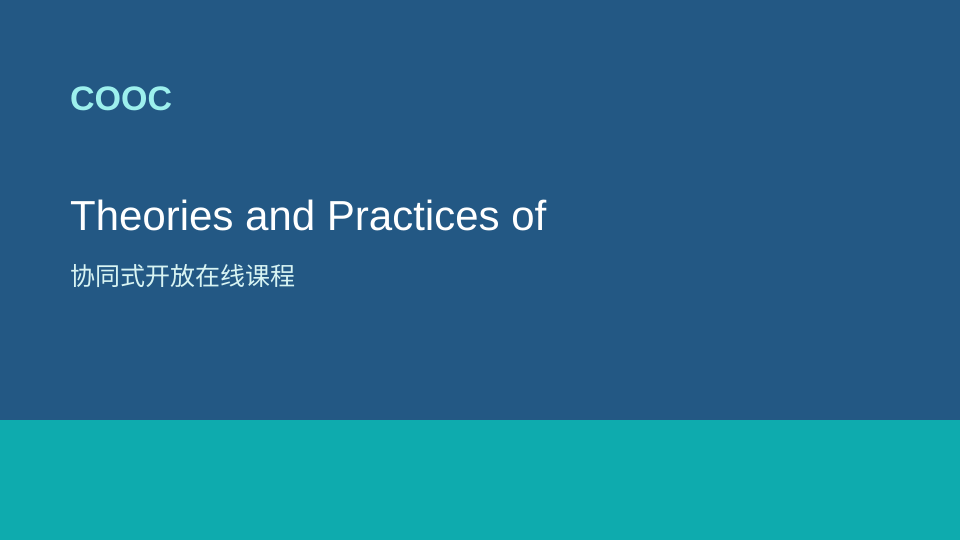

Theories and Practices of Self-Driving Vehicles
Introduction
With the rapid advancement of driverless technology in the past two years, major vehicle companies and driverless system solution providers, such as Baidu Apollo, Jingchi, etc., have also been making continuous efforts to commercialize driverless technologies. Obviously, unmanned vehicle technology is no longer an out-of-reach "technology of the future". The field of unmanned vehicle technology includes not only vehicle control, path planning, perception fusion and other fields, but also cutting-edge fields such as artificial intelligence, machine learning, deep learning, and reinforcement learning. Unmanned vehicle is bound to set off a new technological and market revolution in the next 5-10 years. From the perspective of engineering applications, it is very necessary to learn and practice various basic algorithms in unmanned vehicle systems. Through this book, readers will have a clear and complete understanding of currently popular unmanned vehicle systems and algorithm systems.
